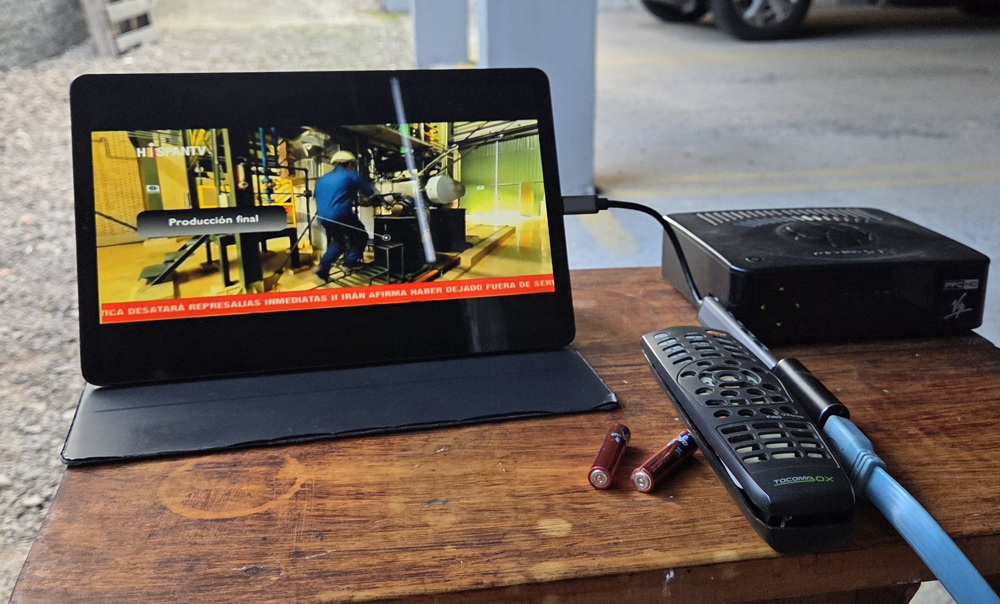
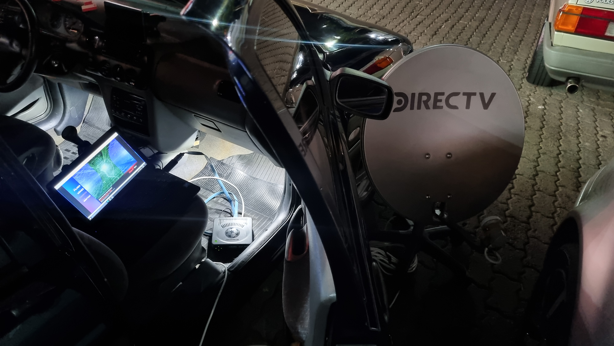

Exploração de Satélites
Um hobby totalmente fora do comum. Explorar satélites geoestacionários com uma mini parabólica portátil, adaptada para apontar e capturar canais digitais abertos de diversos países, e de qualquer lugar.
O hobby: caçar sinais que ninguém mais procura
Entre os hobbies mais incomuns que mantenho está a recepção de canais digitais abertos (FTA — Free-to-Air) transmitidos por satélites geoestacionários de diversos países, captados diretamente do céu com uma antena parabólica portátil. Sem assinatura, sem operadora, sem decodificação proprietária — apenas apontar a antena certa para o ponto certo do céu e capturar o que está sendo transmitido livremente.
Mas tenho de confessar que parar para assistir os canais é a parte que menos empolga kkkkkk. Na verdade, a graça está tanto na engenharia de radiofrequência quanto na geografia: cada satélite geoestacionário ocupa uma posição fixa em relação à Terra, e cada posição carrega seu próprio conjunto de canais, de origens e idiomas variados. Encontrar e capturar esses sinais é uma combinação de cálculo de apontamento, qualidade de hardware, e paciência.

O equipamento: portabilidade como requisito de design
Diferente de uma instalação fixa de antena parabólica, o objetivo aqui sempre foi a portabilidade — poder montar a estação de recepção em qualquer lugar, incluindo em viagens.
Antena
Utilizo uma antena mini parabólica da DirecTV (Sky no Brasil), que trouxe de uma viagem ao Uruguai. O suporte original foi adaptado para comportar um LNB linear (polarização Horizontal/Vertical), e a haste do LNB permite ser retraída contra o refletor — o que torna o conjunto compacto para transporte.
Equipamentos de Recepção
Equipamentos de recepção FTA compatíveis com DVB-S2X, responsáveis por demodular o sinal capturado pelo LNB e decodificar os canais disponíveis na posição orbital apontada.
Alimentação
Como os receptores operam com fonte externa de 12V, desenvolvi adaptadores próprios para alimentar toda a infraestrutura do hobby tanto pela tomada de parede (110/220V) quanto direto pela tomada 12V do carro.
Visualização
Através de uma placa de captura conectada via USB OTG no meu tablet — eliminamos a necessidade de carregar uma TV ou monitor dedicado para acompanhar a recepção em campo.
O resultado: uma estação de recepção portátil!

A combinação dessas adaptações resultou em uma estação de recepção via satélite inteiramente portátil: antena compacta com haste retrátil, receptor alimentado tanto em casa quanto no carro, e visualização direto num tablet sem depender de nenhuma infraestrutura fixa.
Curiosamente, este hobby conecta diretamente a outros interesses que carrego — eletrônica, adaptação de hardware, e entender sistemas de comunicação por trás da experiência simples de "ver um canal de TV". Apontar uma antena para um satélite a 36 mil quilômetros de altitude e ver a imagem se formar é, de muitas formas, o mesmo tipo de satisfação técnica de fazer um sistema embarcado responder a um comando pela primeira vez.